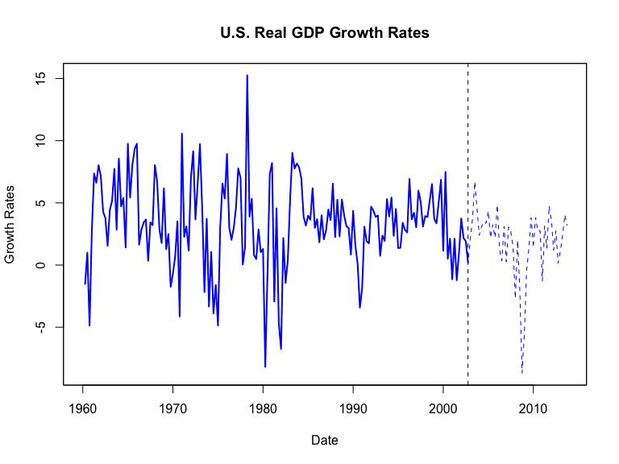
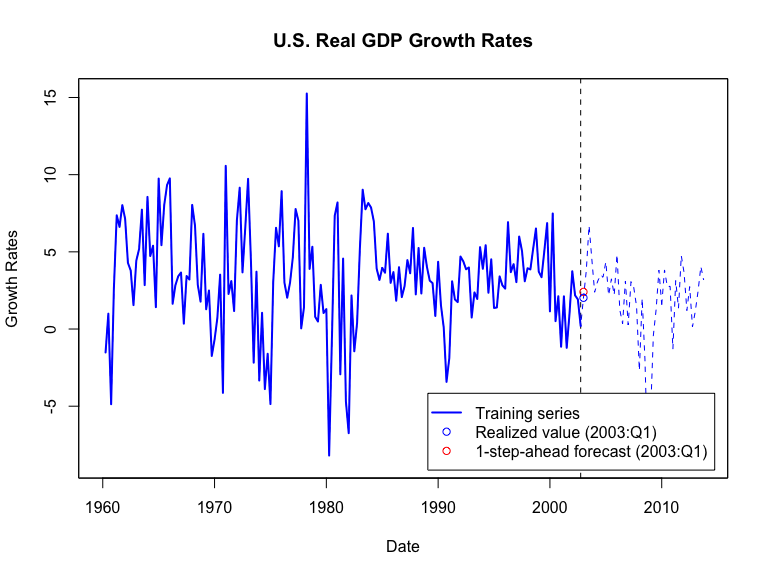
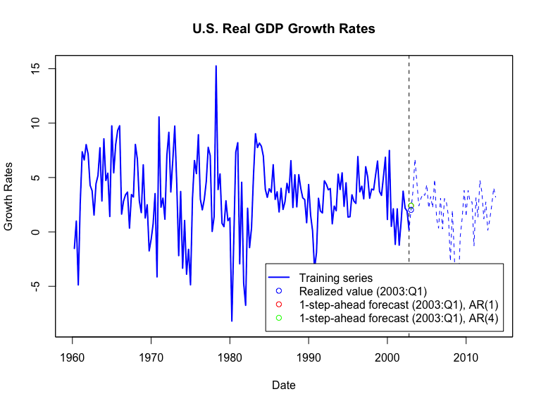

Based on Stock and Watson, ch. 15
How to predict the future? Start with the immediate past!
Autoregression for \(Y_t\) models \(E(Y_t|Y_{t-1},Y_{t-2},\ldots)\)
That is: an autoregression models the conditional mean of \(Y_t\) as a function of its own lagged values
The 1st-order autoregressive model is
\[E(Y_t|Y_{t-1},Y_{t-2},\ldots) = E(Y_t|Y_{t-1}) = \beta_0 + \beta_1 Y_{t-1},\]
where \(\beta_0\) and \(\beta_1\) are unknown (population) coefficients
The \(AR(1)\)-model is
\[Y_t = \beta_0 + \beta_1 Y_{t-1} + u_t\]
where \(u_t = Y_t - E(Y_t|Y_{t-1})\) is an error term w/
\[E(u_t|Y_{t-1},Y_{t-2},\ldots) = E(u_t|Y_{t-1}) = 0\]
The \(AR(1)\)-model is a simple regression of \(Y_t\) (the dependent variable) on \(Y_{t-1}\) (the regressor)
Estimate \(\beta_0\) and \(\beta_1\) by OLS using \((Y_t;t=1,2,\ldots,T)\)
Various ways of doing that in R, including using the lm() function we have used thusfar
# load US macroeconomic data
usmac_qt <- read_xlsx("us_macro_quarterly.xlsx", sheet = 1, col_types = c("text", rep("numeric", 9)))## New names:
## * `` -> ...1# Fix format of date
usmac_qt$...1 <- as.yearqtr(usmac_qt$...1, format = "%Y:0%q")
# Relabel column names in dataframe
colnames(usmac_qt) <- c("Date", "GDPC96", "JAPAN_IP", "PCECTPI",
"GS10", "GS1", "TB3MS", "UNRATE", "EXUSUK", "CPIAUCSL")
# GDP series as xts object
GDP <- xts(usmac_qt$GDPC96, usmac_qt$Date)["1960::2013"]
# GDP growth series as xts object
GDPGrowth <- xts(400 * log(GDP/lag(GDP)))
# Training data
GDPGrowth.train <- na.omit(GDPGrowth["1960::2002"]) 
ar.ols()# AR(1) mode by ar.ols-function
ar1gdp.arols <- ar.ols(GDPGrowth.train, order.max = 1,
demean = FALSE, intercept = TRUE)
ar1gdp.arols # Print output to console##
## Call:
## ar.ols(x = GDPGrowth.train, order.max = 1, demean = FALSE, intercept = TRUE)
##
## Coefficients:
## 1
## 0.3017
##
## Intercept: 2.349 (0.3507)
##
## Order selected 1 sigma^2 estimated as 10.78lm()# AR(1) model by lm-function
T <-length(GDPGrowth.train) # Length of observed series
GDPGrowth.train.t <- as.numeric(GDPGrowth.train[2:T]) # Discard 1st observation
GDPGrowth.train.lag1 <- as.numeric(GDPGrowth.train[1:(T-1)]) # Discard last observation
ar1gdp.lm <- lm(GDPGrowth.train.t ~ GDPGrowth.train.lag1) # OLS estimation
ar1gdp.lm # Print to console##
## Call:
## lm(formula = GDPGrowth.train.t ~ GDPGrowth.train.lag1)
##
## Coefficients:
## (Intercept) GDPGrowth.train.lag1
## 2.3492 0.3017lm()-summary##
## Call:
## lm(formula = GDPGrowth.train.t ~ GDPGrowth.train.lag1)
##
## Residuals:
## Min 1Q Median 3Q Max
## -10.9353 -1.6316 -0.0244 1.9977 12.4890
##
## Coefficients:
## Estimate Std. Error t value Pr(>|t|)
## (Intercept) 2.34918 0.35276 6.659 3.75e-10 ***
## GDPGrowth.train.lag1 0.30174 0.07328 4.118 5.99e-05 ***
## ---
## Signif. codes: 0 '***' 0.001 '**' 0.01 '*' 0.05 '.' 0.1 ' ' 1
##
## Residual standard error: 3.303 on 168 degrees of freedom
## Multiple R-squared: 0.09167, Adjusted R-squared: 0.08626
## F-statistic: 16.95 on 1 and 168 DF, p-value: 5.992e-05## Parameter | Coefficient | SE | 95% CI | t(168) | p
## --------------------------------------------------------------------------
## (Intercept) | 2.35 | 0.39 | [1.57, 3.13] | 5.96 | < .001
## GDPGrowth.train.lag1 | 0.30 | 0.08 | [0.15, 0.46] | 3.87 | < .001\[Y_t = \underset{(0.39)}{2.35} + \underset{(0.08)}{0.30} Y_{t-1} + \hat{u}_t\]
The one-step ahead forecast for US GDP growth is
\[\hat{Y}_{T+1|T} = \underset{(0.39)}{2.35} + \underset{(0.08)}{0.30} Y_{T} \]
The forecast error is \(Y_{T+1} - \hat{Y}_{T+1|T}\)
library(forecast)
# New dataframe with regressors for forecasting (2010:Q4 GDP growth)
fcastdata <- data.frame(GDPGrowth.train.lag1 = as.numeric(GDPGrowth.train[T]))
# Produce one-step ahead forecast of GDP growth for 2003:Q1
fcast.ar1 <- forecast(ar1gdp.lm, newdata = fcastdata)
c(as.numeric(GDPGrowth["2003"][1]),fcast.ar1$mean) # Print to console## [1] 2.021495 2.407375# Forecast error
fcast.ar1.error <- as.numeric(GDPGrowth["2003"][1]) - fcast.ar1$mean
fcast.ar1.error # Print to console## [1] -0.3858802# Produce one-step ahead forecast of GDP growth for 2003:Q1
fcast.ar1.byhand <- ar1gdp.lm$coefficients %*% c(1, GDPGrowth.train[T])
fcast.ar1.byhand## [,1]
## [1,] 2.407375
The 1st-order autoregressive model is
\[E(Y_t|Y_{t-1},Y_{t-2},\ldots) = E(Y_t|Y_{t-1},\ldots,Y_{t-p}) = \beta_0 + \sum_{k=1}^p \beta_k Y_{t-k},\]
where \(\beta_0, \beta_1, \ldots, \beta_p\) are unknown (population) coefficients
Add error \(u_t = Y_t - E(Y_t|Y_{t-1},\ldots,Y_{t-p})\) to get \(AR(p)\)-model:
\[Y_t = \beta_0 + \sum_{k=1}^p \beta_k Y_{t-k} + u_t.\]
The \(AR(p)\)-model is a multiple regression of \(Y_t\) (dependent variable) on \(Y_{t-1},\ldots,Y_{t-p}\) (regressors)
Estimate \(\beta_0, \beta_1, \ldots, \beta_p\) by OLS using \((Y_t;t=1,2,\ldots,T)\)
Various ways of doing that in R, including using the lm() function we have used thusfar
library(dynlm) # Load dynlm to estimate higher-order autoregressions
ar4gdp.dynlm <- dynlm(ts(GDPGrowth.train) ~ L(ts(GDPGrowth.train)) +
L(ts(GDPGrowth.train), 2) +
L(ts(GDPGrowth.train), 3) +
L(ts(GDPGrowth.train), 4))
ar4gdp.dynlm # Print to console##
## Time series regression with "ts" data:
## Start = 5, End = 171
##
## Call:
## dynlm(formula = ts(GDPGrowth.train) ~ L(ts(GDPGrowth.train)) +
## L(ts(GDPGrowth.train), 2) + L(ts(GDPGrowth.train), 3) + L(ts(GDPGrowth.train),
## 4))
##
## Coefficients:
## (Intercept) L(ts(GDPGrowth.train))
## 2.05005 0.25849
## L(ts(GDPGrowth.train), 2) L(ts(GDPGrowth.train), 3)
## 0.15456 -0.03891
## L(ts(GDPGrowth.train), 4)
## 0.02788##
## Time series regression with "ts" data:
## Start = 5, End = 171
##
## Call:
## dynlm(formula = ts(GDPGrowth.train) ~ L(ts(GDPGrowth.train)) +
## L(ts(GDPGrowth.train), 2) + L(ts(GDPGrowth.train), 3) + L(ts(GDPGrowth.train),
## 4))
##
## Residuals:
## Min 1Q Median 3Q Max
## -10.6423 -1.7602 -0.0569 2.0207 12.8979
##
## Coefficients:
## Estimate Std. Error t value Pr(>|t|)
## (Intercept) 2.05005 0.45806 4.475 1.43e-05 ***
## L(ts(GDPGrowth.train)) 0.25849 0.07864 3.287 0.00124 **
## L(ts(GDPGrowth.train), 2) 0.15456 0.08000 1.932 0.05509 .
## L(ts(GDPGrowth.train), 3) -0.03891 0.07981 -0.488 0.62655
## L(ts(GDPGrowth.train), 4) 0.02788 0.07716 0.361 0.71834
## ---
## Signif. codes: 0 '***' 0.001 '**' 0.01 '*' 0.05 '.' 0.1 ' ' 1
##
## Residual standard error: 3.265 on 162 degrees of freedom
## Multiple R-squared: 0.1115, Adjusted R-squared: 0.08951
## F-statistic: 5.08 on 4 and 162 DF, p-value: 0.0006988## Parameter | Coefficient | SE | 95% CI | Statistic | df | p
## -----------------------------------------------------------------------------------------
## (Intercept) | 2.05 | 0.55 | [ 0.96, 3.14] | 3.71 | 162 | < .001
## L(ts(GDPGrowth.train)) | 0.26 | 0.08 | [ 0.09, 0.43] | 3.06 | 162 | 0.003
## L(ts(GDPGrowth.train), 2) | 0.15 | 0.10 | [-0.05, 0.36] | 1.51 | 162 | 0.134
## L(ts(GDPGrowth.train), 3) | -0.04 | 0.08 | [-0.20, 0.12] | -0.48 | 162 | 0.635
## L(ts(GDPGrowth.train), 4) | 0.03 | 0.10 | [-0.17, 0.23] | 0.28 | 162 | 0.783lm()# AR(1) model by lm-function
T <-length(GDPGrowth.train) # Length of observed series
GDPGrowth.train.t <- as.numeric(GDPGrowth.train[5:T]) # Discard 1st observation
GDPGrowth.train.lag1 <- as.numeric(GDPGrowth.train[4:(T-1)]) # First lag
GDPGrowth.train.lag2 <- as.numeric(GDPGrowth.train[3:(T-2)]) # Second lag
GDPGrowth.train.lag3 <- as.numeric(GDPGrowth.train[2:(T-3)]) # Third lag
GDPGrowth.train.lag4 <- as.numeric(GDPGrowth.train[1:(T-4)]) # Fourth lag
ar4gdp.lm <- lm(GDPGrowth.train.t ~ GDPGrowth.train.lag1 +
GDPGrowth.train.lag2 +
GDPGrowth.train.lag3 +
GDPGrowth.train.lag4) # OLS estimation
ar4gdp.lm # Print to console##
## Call:
## lm(formula = GDPGrowth.train.t ~ GDPGrowth.train.lag1 + GDPGrowth.train.lag2 +
## GDPGrowth.train.lag3 + GDPGrowth.train.lag4)
##
## Coefficients:
## (Intercept) GDPGrowth.train.lag1 GDPGrowth.train.lag2
## 2.05005 0.25849 0.15456
## GDPGrowth.train.lag3 GDPGrowth.train.lag4
## -0.03891 0.02788lm()-summary##
## Call:
## lm(formula = GDPGrowth.train.t ~ GDPGrowth.train.lag1 + GDPGrowth.train.lag2 +
## GDPGrowth.train.lag3 + GDPGrowth.train.lag4)
##
## Residuals:
## Min 1Q Median 3Q Max
## -10.6423 -1.7602 -0.0569 2.0207 12.8979
##
## Coefficients:
## Estimate Std. Error t value Pr(>|t|)
## (Intercept) 2.05005 0.45806 4.475 1.43e-05 ***
## GDPGrowth.train.lag1 0.25849 0.07864 3.287 0.00124 **
## GDPGrowth.train.lag2 0.15456 0.08000 1.932 0.05509 .
## GDPGrowth.train.lag3 -0.03891 0.07981 -0.488 0.62655
## GDPGrowth.train.lag4 0.02788 0.07716 0.361 0.71834
## ---
## Signif. codes: 0 '***' 0.001 '**' 0.01 '*' 0.05 '.' 0.1 ' ' 1
##
## Residual standard error: 3.265 on 162 degrees of freedom
## Multiple R-squared: 0.1115, Adjusted R-squared: 0.08951
## F-statistic: 5.08 on 4 and 162 DF, p-value: 0.0006988## Parameter | Coefficient | SE | 95% CI | t(162) | p
## ---------------------------------------------------------------------------
## (Intercept) | 2.05 | 0.55 | [ 0.96, 3.14] | 3.71 | < .001
## GDPGrowth.train.lag1 | 0.26 | 0.08 | [ 0.09, 0.43] | 3.06 | 0.003
## GDPGrowth.train.lag2 | 0.15 | 0.10 | [-0.05, 0.36] | 1.51 | 0.134
## GDPGrowth.train.lag3 | -0.04 | 0.08 | [-0.20, 0.12] | -0.48 | 0.635
## GDPGrowth.train.lag4 | 0.03 | 0.10 | [-0.17, 0.23] | 0.28 | 0.783\[Y_t = \underset{(0.55)}{2.05} + \underset{(0.08)}{0.26} Y_{t-1} + \underset{(0.10)}{0.15} Y_{t-2} - \underset{(0.08)}{0.04} Y_{t-3} + \underset{(0.10)}{0.03} Y_{t-4} + \hat{u}_t\]
The one-step ahead forecast for US GDP growth is
\[\hat{Y}_{T+1|T} = \underset{(0.55)}{2.05} + \underset{(0.08)}{0.26} Y_{T} + \underset{(0.10)}{0.15} Y_{T-1} - \underset{(0.08)}{0.04} Y_{T-2} + \underset{(0.10)}{0.03} Y_{T-3} \]
The forecast error is
\[Y_{T+1} - \hat{Y}_{T+1|T}\]
# Produce one-step ahead forecast of GDP growth for 2003:Q1
fcast.ar4 <- ar4gdp.dynlm$coefficients %*% c(1, GDPGrowth.train[T], GDPGrowth.train[(T-1)], GDPGrowth.train[(T-2)], GDPGrowth.train[(T-3)])
fcast.ar4 # Print to console## [,1]
## [1,] 2.415979# Forecast error
fcast.ar4.error <- as.numeric(GDPGrowth["2003"][1]) - fcast.ar4
c(fcast.ar1.error,fcast.ar4.error) # Print to console## [1] -0.3858802 -0.3944846
Autoregressions predict the future using the immediate past
The order of the autoregression is the number of periods considerd in the immediate past
Estimation of autoregressions by OLS
Use estimated autoregression to forecast